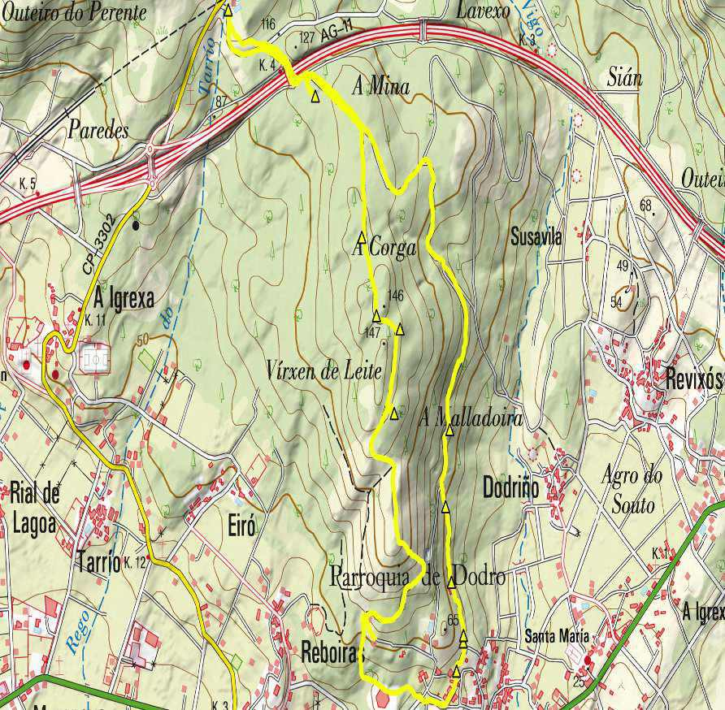
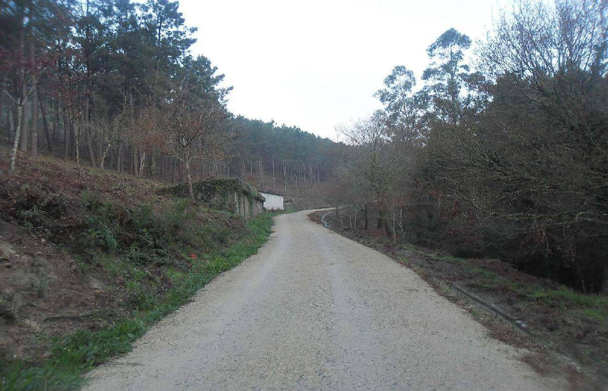
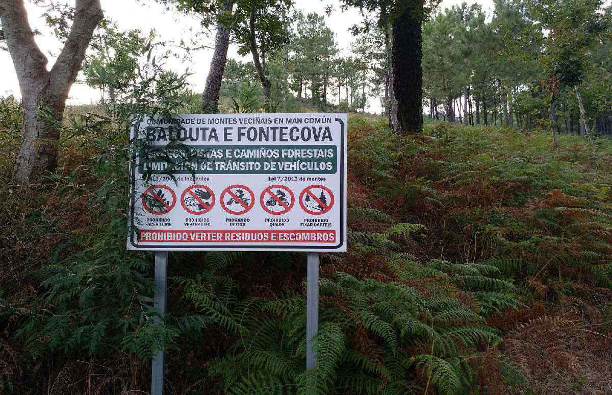
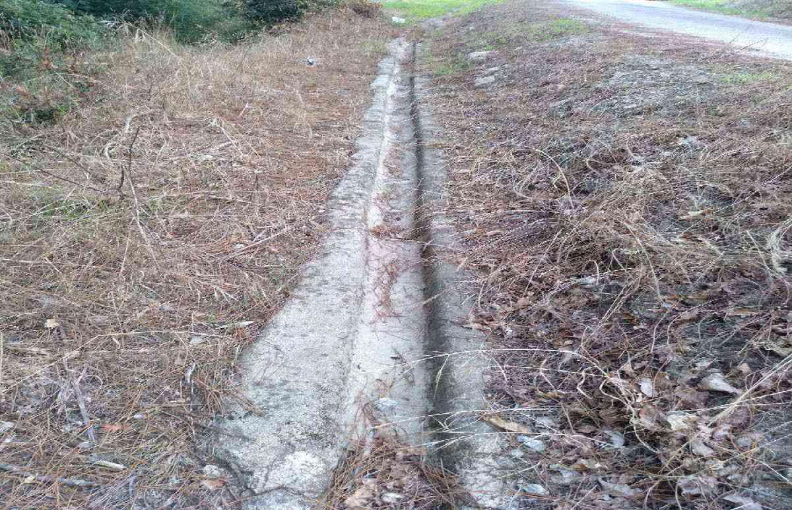
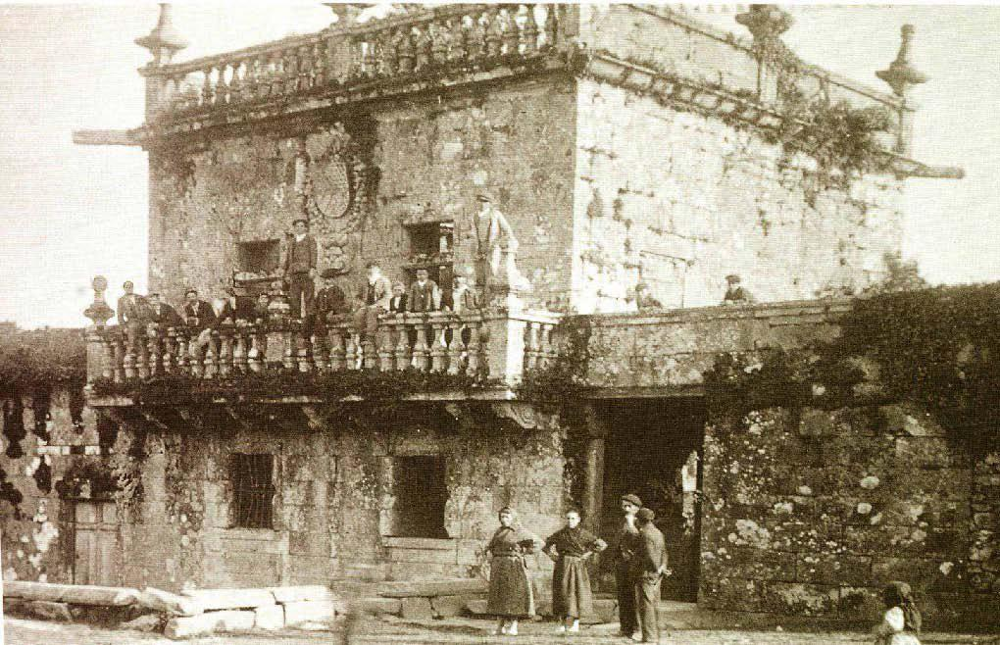
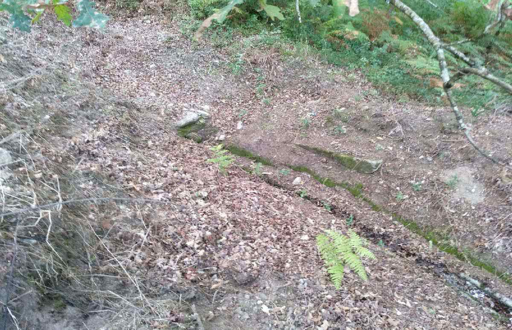
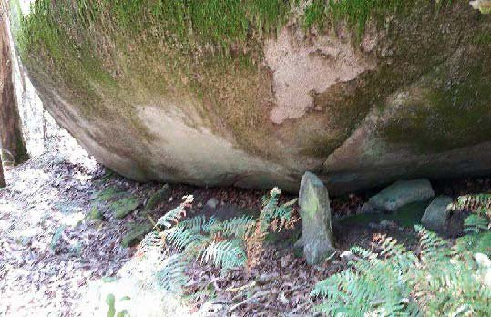
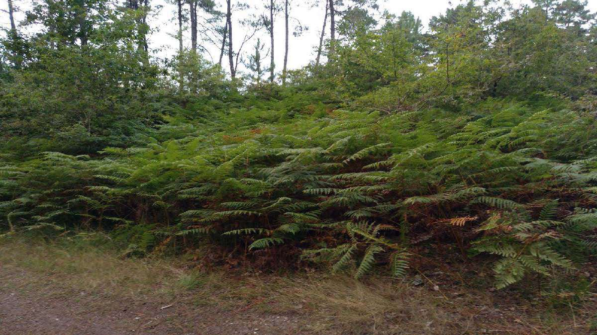
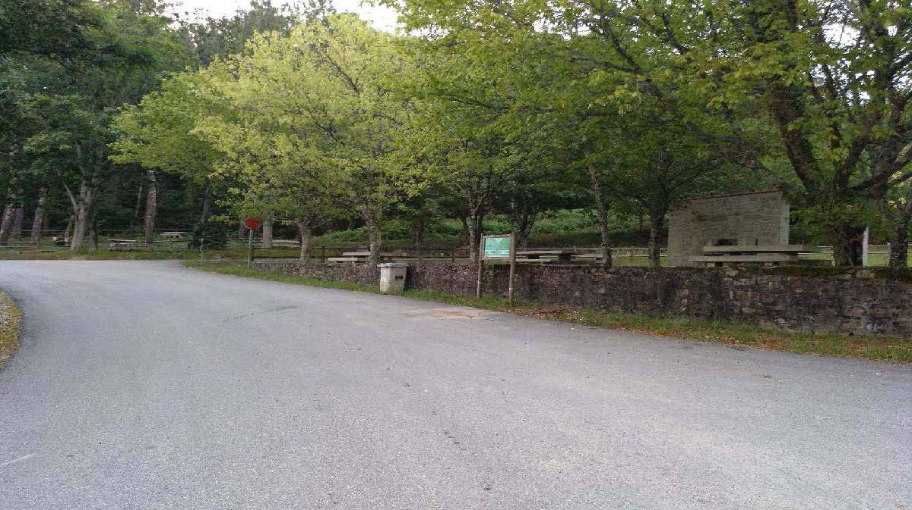
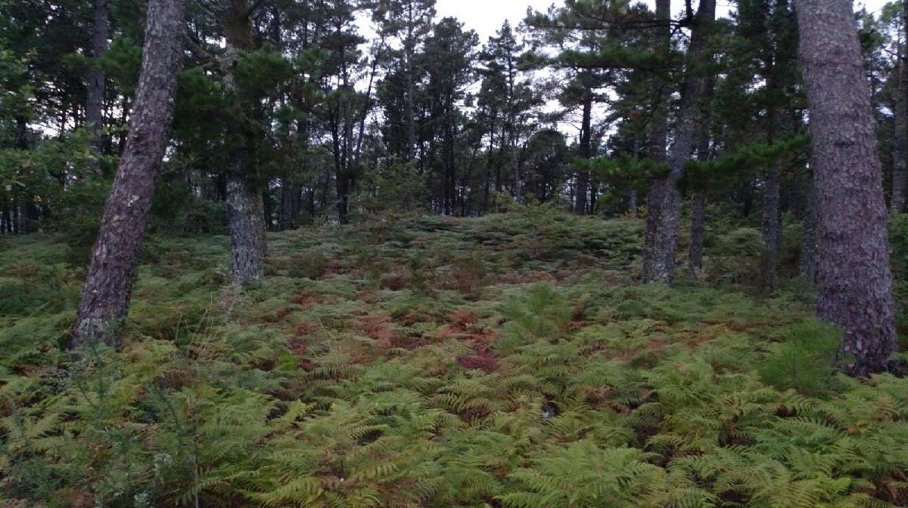

Ruta circular que percorre as inmediacións do Monte Balouta pasando polas instalacións da antiga granxa cinexetica e a área recreativa da Fonte Primeiral.
| Inicio | Antiga granxa cinexetica |
| Fin | Antiga granxa cinexetica |
| Distancia | 5,98 Km |
| Tipo | Circular |
| Duración | 1 h 30 min |
| Dificultade | Media - Baixa |

Granxa cinexética
“Comezamos a ruta nos arredores da Paxareira, entre Reboiras e Vigo, onde no 1963 inaugurouse unha granxa cinexética que criaba perdiz vermella, colín de Virxinia, colín de California, faisán común e faisán inglés.”

Balouta e Fontecova
“Imos ascendendo polos terreos da Comunidade de Montes Veciñais en man común Balouta e Fontecova.”
Canle do pazo de Bendaña
“Tamén coñecido como A Torre ou A Casa do Marqués, pero como o ditador a visitara en ocasións pasou a ser A Horta de Franco. No Pinal do Marqués facían noite os pascueiros que levaban os cabalos á feira de Padrón. Onde antes había piñeiros mansos xigantescos medrou despois un bosque de acacias negras. Nos primeiros anos da posguerra foi desmantelado e trasladado a Meirás. A balaustrada dispúxose sobre o muro de contención que está diante do edificio. Sánchez Cantón dinos que había en Dodro unha importante biblioteca que debeu marchar coas pedras. Os canteiros que participaron na demolición lembraban a fermosa fonte e os canzorros cos mastíns labrados no granito. Ángel del Castillo (Inventario de la riqueza monumental y artística de Galicia) sinala que aínda que esta Torre e Pazo de Dodro xa existía a principios do s. XVI, o edificio fíxose despois en estilo barroco compostelano, dos séculos XVII e XVIII.O Couto Redondo de Dodro e Lestrobe foi da xurisdición do Marqués de Bendaña. Martínez Barbeito desenreda a súa xenealoxía que se remonta a don Marcos Fandiño, proxenitor tamén dos señores da Torre de Goiáns en Boiro. Na segunda metade do s. XVII, don Carlos de la Torre Romay e Soutomaior, herdou a Torre de Dodro e a Torre do Monte en Padrón. A súa filla Xoana casará co segundo Marqués de Bendaña, don Xoán Benito Piñeyro e Ulloa. A partir de aí pertenceu a esta familia. Nos cuarteis das cinco pedras armeiras que ostentaba pódese reconstruír a historia do Pazo de Vigo e a de todas as liñaxes que con el emparentan: a flor de lis dos Florín, o enreixado dos Valadares, a torre dos La Torre, o piñeiro dos Camaño, as faixas dos Ribera e a serea nadando sobre as ondas dos Mariño. Xa se sabe que o primeiro da estirpe naceu na illa de Sálvora, da unión carnal dun fidalgo deste reino cunha serea de fermoso rostro. Relátao o licenciado Molina, no s. XVI, na súa Descrición del Reino de Galicia. Cando Sarmiento chegou aquí polo enlousado Camiño Real, deixou escrita a data que veu na entrada: 1643. Resta agora un escudo daqueles cinco inaugurais e os muros da que foi Capela de San Xosé coa bóveda de pedra de cantaría, as cornixas traballadas así coma algunhas ménsulas no interior e unha imaxe moi fermosa do santo co neno Xesús.” “En paralelo ao camiño observamos unha canle labrada en pedra para a subministración de auga do desaparecido Pazo de Bendaña. Este atopábase na aldea de Vigo e pertencía aos Marqueses de Bendaña. ”
 Fonte do pazo de Bendaña
“Preto encontramos a fonte e inicio da citada canle do Pazo de Bendaña. ”
Pedra redonda
“Topamos a Pedra Redonda, ovo abisal froito do parto dos montes Está arriba de Vigo, no camiño que vai cara a Mina, trátase dun outeiro ciclópeo, un petón xigantesco puído cara o nacente coma unha esfera celeste. Nas súas proximidades localizouse unha cabeza labrada rudimentariamente nun bloque granítico que se conserva no Museo Arqueolóxico de A Coruña, probablemente do período castrexo. Ten na súa superficie, coma os penedos do Santiaguiño do Monte e coma moitos outros, covas ou cazoletas formadas pola erosión das augas, que a tradición popular quere que sexan as pegadas do cabalo do Apóstolo e noutros lugares de Galicia as marcas que deixou a burra da Sagrada Familia na fuxida a Exipto. O que está claro para as nosas xentes é que as pedras colosais que polos montes paran só puideron quedar varadas neles despois da chuvieira bíblica do Diluvio Universal. Terra de xigantes. Ao pé da Pedra Redonda os xeólogos non dubidan.” “Seguindo o camiño e no lugar coñecido como A Alla, supoñemos que pola abundancia de allos bravos (Allium sp.) tal e como comenta Gonzalo Navaza, na “Fitotoponimia”.”
Mámoa da mina Balouta 1
“Este túmulo megalítico non ten cámara nin restos da coiraza. Presenta unhas dimensións de 29 m de diámetro e 2 de altura, cun cráter de violación de 8 m de diámetro e 1 de fondo. Comentaba Sarmiento que a xente lle chamaba mina aos enclaves onde había mámoas porque pensaban que nelas podían atopar tesouros. Durante un breve período de tempo houbo aquí unha pequena mina da que se sacou cuarzo para as cerámicas do veciño municipio de Catoira.” “Logo no lugar de Ladride encontramos restos arqueolóxicos, en concreto, unha mámoa do neolítico, oculta pola vexetación e moi alterada debido á actividade humana ao longo do tempo. ”
Área recreativa da fonte Primeiral
“Máis adiante alcanzamos a área recreativa da Fonte Primeiral, situada na estrada que vai de Laíño a Rois, onde antano se celebraba a Festa do Carneiro.”
Mámoa da mina Balouta 2
“Trátase dun túmulo megalítico, sen cámara e coiraza de granito, na chaira dunha divisoria. Ten unha lonxitude de 18 m, de N a S, 20 m de diámetro de L a O e 15 m de altura. O cráter mide 4,50 m de diámetro e 20 centímetros de fondo.” “Nas proximidades localizamos unha segunda mámoa do neolítico. Non está tan alterada como a anterior pero a súa contorna foi repoboada con piñeiros, feito que lle resta visibilidade.”
